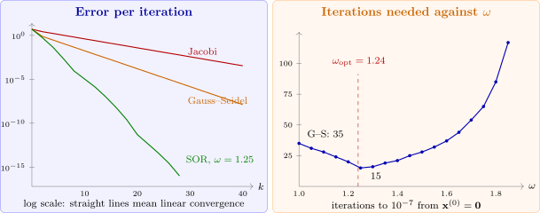

5.4 Relaxation methods
Gauss–Seidel moves each component from \(x_i^{(k-1)}\) to the value \(\tilde x_i\) given by (5.3). When the iterates approach the solution steadily from one side, moving a little further than that, \(x_i^{(k)} = x_i^{(k-1)}+\omega (\tilde x_i-x_i^{(k-1)})\) with \(\omega >1\), speeds convergence. This is the successive over-relaxation or SOR method: \begin {equation} \label {eq:sor} x_i^{(k)} = (1-\omega )x_i^{(k-1)}+\frac {\omega }{a_{ii}}\left (b_i-\sum _{j<i}a_{ij}x_j^{(k)}-\sum _{j>i}a_{ij}x_j^{(k-1)}\right ). \end {equation} For \(\omega = 1\) it is Gauss–Seidel; \(\omega <1\) is under-relaxation, occasionally used to make a divergent iteration converge.
- (i)
- (Kahan) If \(a_{ii}\neq 0\) for all \(i\), SOR can converge only if \(0<\omega <2\).
- (ii)
- (Ostrowski–Reich) If \(A\) is positive definite and \(0<\omega <2\), SOR converges for every \(\mathbf x^{(0)}\).
- (iii)
- If \(A\) is positive definite and tridiagonal, then \(\rho (T_g) = \rho (T_j)^2<1\), and the choice of \(\omega \) that minimizes \(\rho (T_\omega )\) is \[\omega _{\text {opt}} = \frac {2}{1+\sqrt {1-\rho (T_j)^2}},\qquad \text {with}\qquad \rho (T_{\omega _{\text {opt}}}) = \omega _{\text {opt}}-1 .\]
We prove (i): the SOR iteration matrix is \(T_\omega = (D-\omega L)^{-1}\bigl ((1-\omega )D+\omega U\bigr )\), a product of triangular matrices, so \[\det T_\omega = \frac {\det \bigl ((1-\omega )D\bigr )}{\det D} = (1-\omega )^n .\] Since the determinant is the product of the eigenvalues, \(\rho (T_\omega )^n\geq |\det T_\omega | = |1-\omega |^n\), so \(\rho (T_\omega )\geq |1-\omega |\), which is at least \(1\) unless \(0<\omega <2\). Parts (ii) and (iii) are proved in the texts by Burden and Faires and by Atkinson.
Example 5.4.2. Solve \[4x_1+3x_2 = 24,\qquad 3x_1+4x_2-x_3 = 30,\qquad -x_2+4x_3 = -24\] (solution \((3,4,-5)^T\)) by Gauss–Seidel and by SOR, and find the optimal \(\omega \).
Solution. The matrix is positive definite and tridiagonal. Here \(T_j\) has eigenvalues \(0\) and \(\pm \sqrt {0.625}\), so \(\rho (T_j) = 0.7906\), \(\rho (T_g) = 0.625\) and \[\omega _{\text {opt}} = \frac {2}{1+\sqrt {1-0.625}} = 1.24 .\] From \(\mathbf x^{(0)} = (1,1,1)^T\):
| \(k\) | Gauss–Seidel | SOR, \(\omega = 1.25\) | |
| \(1\) | \((5.2500, 3.8125, -5.0469)\) | \((6.3125, 3.5195, -6.6501)\) | |
| \(2\) | \((3.1406, 3.8828, -5.0293)\) | \((2.6223, 3.9585, -4.6004)\) | |
| \(3\) | \((3.0879, 3.9268, -5.0183)\) | \((3.1333, 4.0103, -5.0967)\) | |
| \(5\) | \((3.0343, 3.9714, -5.0072)\) | \((3.0037, 4.0029, -5.0057)\) | |
| \(7\) | \((3.0134, 3.9888, -5.0028)\) | \((3.0001, 4.0003, -5.0003)\) | |
Starting from \(\mathbf 0\) and stopping when successive iterates differ by less than \(10^{-7}\), Jacobi needs \(79\) iterations, Gauss–Seidel \(35\) and SOR with \(\omega = 1.25\) only \(15\) (Figure 7).

Questions on this section
Stuck on something here? Ask below and it stays attached to this topic.